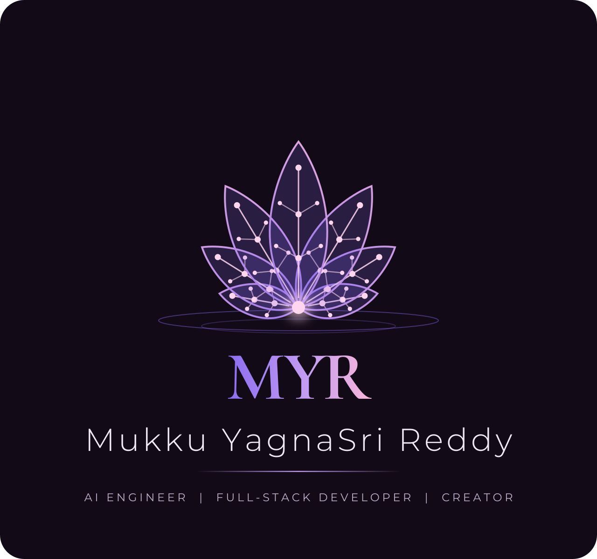
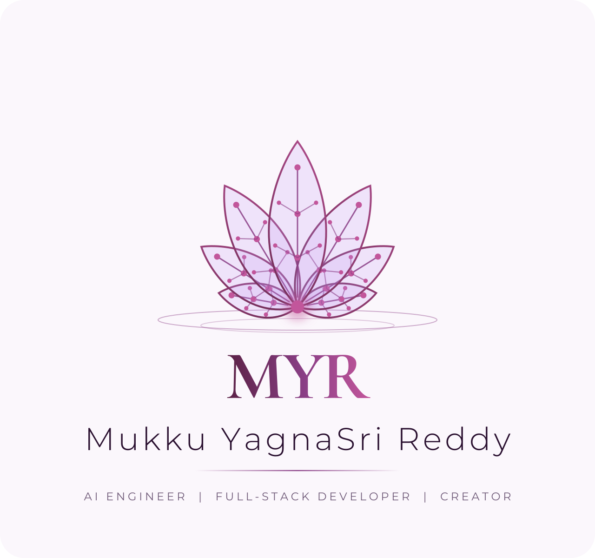
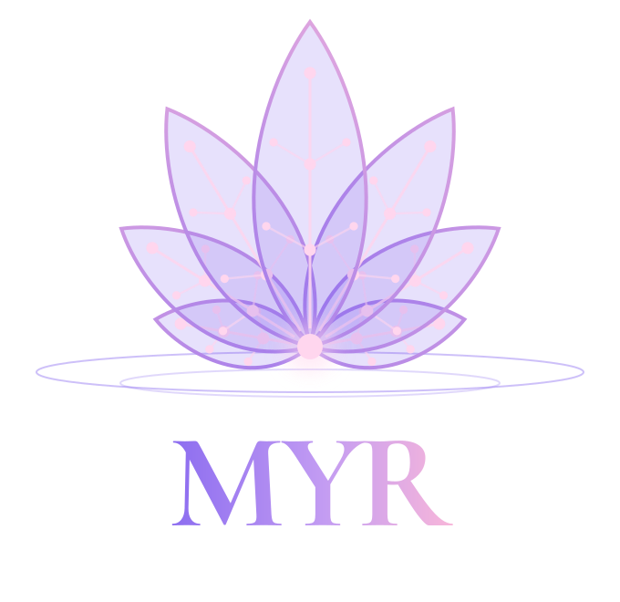
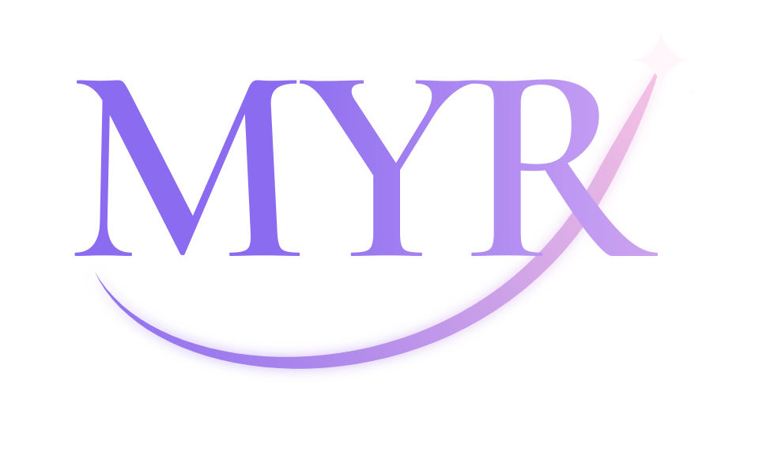

The Lotus Circuit logo
A lotus whose veins are circuits, rising from still water, with the initials MYR beneath. All lettering is converted to vector outlines, so it stays crisp at any size.
The meaning
The lotusGrows beautifully out of still water: growth, resilience and Indian heritage.
The circuit veinsNodes and traces run through every petal: technology and AI growing from tradition.
The glowing centreThe spark of an idea at the heart of every project.
The water ringsCalm, steady ripples: the quiet focus behind careful engineering.
Full lockup


Mark and app icon

Also kept: the MYR orbit monogram

Colour
Violet
#8B6CF0
#8B6CF0
Lilac
#C39CF2
#C39CF2
Rose
#F7B6DA
#F7B6DA
Node glow
#FFD6EE
#FFD6EE
Plum
#5A2145
#5A2145
Night
#120A17
#120A17
Download
Lockup dark · SVG
Lockup light · SVG
Mark · SVG
Icon · SVG
Lockup · PNG
Icon · PNG 512
← Back to portfolio


• Use the dark lockup on dark backgrounds and the light lockup on white or pale ones.• Keep clear space around the mark equal to the height of the "MYR" letters.• Minimum size: 24 px for the icon, 140 px wide for the lockup.